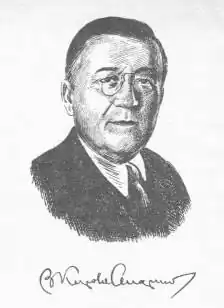
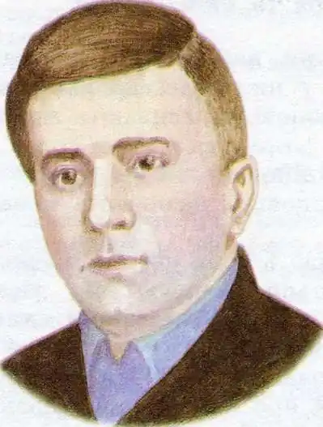

ВАСИЛЬ КОРОЛІВ-СТАРИЙ
(1879—1943)
Справжнє ім'я — Василь Костьович Королів. Василь Королів-Старий народився в с Ладан Прилуцького повіту на Полтавщині 4 лютого 1879 р. Навчався в Полтавській духовній семінарії, продовжив освіту в Харківському ветеринарному інституті. Працював ветеринарним лікарем, видав популярний посібник з ветеринарії. У 1906 р. під час революційних подій в Україні В. Королів-Старий був заарештований царським урядом. Звільнившись, він стає активним дописувачем українських газет "Рада", "Хлібороб", "Засів". Згодом журналістика та видавнича справа стають основними в діяльності молодого літератора: він працював редактором у видавництві "Час", редагував журнал "Книгар", що виходив у Києві. Революційні події в Україні стали передумовою створення Української Народної Республіки, яка, на жаль, невдовзі була придушена російськими більшовицькими загонами Муравйова. Тому в 1919р. Королів-Старий виїхав до Чехо-Словаччини, де викладав в Українській сільськогосподарській академії в Подебрадах і водночас займався літературною творчістю. За кордоном почав писати й художні твори. В 20-і роки з-під його пера виходять художні твори: роман "Хмелик" (Прага, 1920), збірка казок "Нечиста сила" (Каліш — Київ, 1923), п'єса-казка "Русалка-жаба" (Львів, 1923) та ін. З них у наш час перевидана поки що лише збірка казок "Нечиста сила" (К-: Веселка, 1992). Майже чверть століття письменник перебував за межами України. Долю Королева-Старого розділила і його дружина — українська письменниця Наталена Королева. Вони обоє завершили свій життєвий і творчий шлях у місті Мельнику (Чехія), він — 11 грудня 1943р., вона — 1 листопада 1966-го. У романі "Хмелик" (підзаголовок — "Навколо світу"), що не виданий ще й досі в Україні, розповідається про долю юнака з Полтавщини, який був змушений покинути рідну землю, блукати світами, зазнаючи поневірянь скитальця. Та найповніше розкрився талант письменника в збірці казок "Нечиста сила". Автор вирішив оживити спогади свого дитинства, переосмислити образи фольклорно-казкових представників "неіснуючого, невидимого світу", по-новому потрактувати персонажів української міфології, зокрема "нечисту силу". Василь Королів-Старий у передмові до збірки "Нечиста сила" писав: "Дарма, що інтелігентні люди ставляться до "нечистої сили" з легкою та добродушною посмішкою. Дарма, що тепер не знайдеш освіченої людини, котра йняла б віри якомусь чортовинню. Однаково — найосвіченіша, найінтелігентніша людина нашого віку бодай для форми вислову згадує чорта, диявола, якогось "злого духа". Найчастіш ця згадка буває тільки словом лайки, тим завченим порожнім звуком, що не має в собі жодного змісту... Тим-то, коли вже ми не можемо вигнати чортовиння з нашого світу, то ж чи не краще буде розповідати про нього дітям, як про персоніфіковані сили природи, по змозі позбавляючи їх елементів зла та ворожості?! Я — не педагог і, можливо, помиляюсь. Отож, як результат моєї помилки, з'явиться оця книжка казок, в яких собі дозволяю боронити перед дітьми насамперед нашу, українську "нечисту силу", що, на мою думку, часто буває далеко менш небезпечною, ніж деякі інші "сили", яких, на жаль, не звуть "нечистими". Указках "Потерчата" та "Хуха-Моховинка" головними героями виступають міфічні істоти. Згідно з повір'ями наших предків, потерчата — душі дітей, які померли нехрещеними й стали болотяними вогниками ("Потерчатка були малесенькі, зовсім голі, з великими, блискучими очима й сторчоватими синенькими чубиками на голівках. Бігли вони жваво, тільки ж їхні маленькі криві ніжки не могли широко ступати, а через те вони посувалися вперед дуже повільно. Тим-то дякові видавалося, що ті вогники тихо повзуть понад болотом, коливаються, як зачеплена головою лампадка в церкві."), Домовик — охоронець домашнього вогнища та родинних святинь, а Хуха — міфічна істота, пухка, як мох, інколи з'являлась перед очима людей, коли, добре натомившись, вони казали: "Хух!". Всі названі герої наділені автором найкращими людськими рисами вдачі: Домовик і потерчата рятують п'яненького дяка Оверка від загибелі, Хуха-Моховинка, забувши заподіяне їй зло, рятує від смерті діда-дереворуба ("Шкода стало Моховинці старого, безпомічного діда. Забула вона й про те, як він зруйнував її хатку та вигнав з батьківщини. Як хотів він її зарубати сокирою та на все життя зробив кривенькою". Фантастичні казки Василя Королева-Старого подібні до народних казок. Однак літературна казка має свої особливості, що відрізняють її від народної. Читач бачить те, що відбувається, очима автора, який ділиться з нами життєвими спостереженнями. Так, мудрий погляд Королева-Старого на життя вчить читачів справедливо оцінювати вчинки казкових героїв, розрізняти добро і зло як у казках, так і в житті. Ще одна особливість літературної казки — не традиційна для жанру казки мова зі сталими зворотами, а індивідуальна, авторська. У Королева-Старого вона витончена, шляхетна й трохи іронічна. Без сумніву, Королів-Старий — талановитий письменник. Його талант виявився передусім у вмінні пильними очима придивлятися до всього, що його оточувало. Він помічав те, чого не бачили інші. Змальовуючи створіння, які "невидимо живуть обіч з нами", Королів-Старки намагався розширити межі уявлення про довколишній світ природи й людини. Народи світу протягом століть творили свою історію, з покоління в покоління розвивали усну творчість. Письменник своєю книжкою казок неначе запитує читачів: чи варто відмовлятися від тієї багатющої духовної спадщини, яку людство створювало віками? І відповідає: "Не варто!" Не замикаючись лише в рамках українського фольклору, ній хоче зацікавити юного читача міфологією інших народів. Але для цього, зрозуміло, українська дитина має насамперед засвоїти національну фольклорну стихію. Окрім того, автор покладає великі вади на те, що казки привчають дітей бути уважнішими, чуйнішими, добрішими. Недарма в хорі русалок мажорним акордом звучать слова: Хай правда по світу полине, Щасливі най будуть всі люди... Звідціль, з чарівної Вкраїни, Хай радість розійдеться всюди! Книжка Королева-Старого "Нечиста сила" доповнює і збагачує великий материк українських літературних казок, що витворили такі видатні майстри слова, як Марко Вовчок, П. Куліш, Ю. Федькович, С. Воробкевич, І. Франко, Леся Українка, Панас Мирний, а також Н. Забіла, А. Шиян, М. Пригара, П. Воронько, В. Близнець та ін. ОСНОВНІ ТВОРИ: Роман "Хмелик", збірка казок "Нечиста сила", п'єса-казка "Русалка-жаба". ДОДАТКОВА ЛІТЕРАТУРА: 1. Чух Г. Не така вже й страшна нечиста сила// Дивослово —2005.—N° 1.